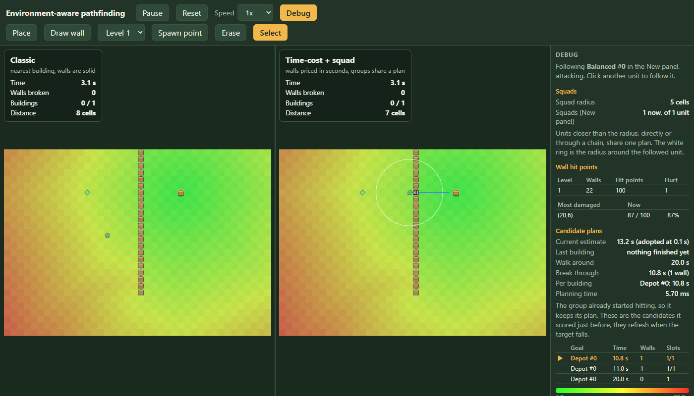

Pathfinding part 3: planner fixes and editor issues from real use
A planner bug the oracle explains, and what real use broke in the editor.
Part 2 left the planner 8x over its speed target and the oracle barely passing on its worst seed. This part has three planner fixes: skip the planning work nobody reads, carry bumped arrivals between stages (24% estimate miss down to 4%), and price mixed-speed squads by their slowest member. Then four editor issues that only showed up in real use.
The half of every decision nobody was reading
A squad decision tries up to six candidate routes. evaluate() scores each one with a rollout, then calls plansFor() on every candidate to build a per-member walking plan, which costs one more full flow field per candidate. Only the winner's plan is ever used. The debug table reads just total and stageSlots. So about half the fields computed per decision were thrown away.
The fix: plans becomes a lazy getter. The winner's plan is still built right after the sort, so a caller that reads it later gets the plan as it was at decision time:
return Object.defineProperty(entry, 'plans', {
enumerable: true,
get: () => (plans ??= this.plansFor(entry, members, strength)),
}) as Evaluated
// ...
scored.sort((a, b) => a.total - b.total)
void scored[0]?.plans // eager for the winner23.8 ms down to 21.0 ms on part 2's benchmark (10 squads, 50 troops, 40x28 map). The 3 ms target is still far off. This fix only removes wasted work. The costly parts are untouched: each squad recomputes its field on every event with no cache, and searches its candidates from scratch.
A bug the oracle had been reporting since part 1
The oracle runs every candidate plan from 200 random maps through the real simulation and compares the result with the planner's estimate. Seed 10069 was estimated at 9.77 s but took 12.33 s. A 24% miss is still inside the oracle's tolerance, so no test failed, but it is too big to be noise.
I stepped the simulation tick by tick for that seed: four troops, one wall, one tower behind it. The wall broke on time (2.20 s real, 2.17 s estimated). The tower did not. Troops 2 and 3 were expected there by about 6 s, but they arrived at 10.20 s and 10.43 s.
Within a stage, the rollout was already correct. A troop that loses the nearest attack position is bumped to a farther one, and its extra walk is added. The bug was between stages. That later arrival fed only the current stage's break time and was then dropped. The next stage's walk started from the original arrival, as if the bumped troops had teleported back to the fast path.
The fix: stageTime() now also returns a ready array, one time per member by original index, and the next stage starts from it:
const ready = arrivals.slice()
const hitters = order.slice(0, slots).map((i, rank) => {
const arrival = arrivals[i] + this.slots.foundDepth[rank] / members[i].type.speed
ready[i] = arrival // the next stage walks from here
return { arrival, dps: members[i].type.dps }
})
// caller:
arrivals = result.readySeed 10069's two candidates now estimate 10.73 s and 11.87 s against real times of 10.77 s and 12.33 s, both within 4%. The planner now picks the walk-around route, which the bad estimate had hidden. Across the 200 maps, plus two fresh sets not used while writing the fix:
| setting | within 5% | worst pick | mean estimate error |
|---|---|---|---|
| one attacker per position, before | 199 of 200 | 1.052 | 1.2% |
| one attacker per position, after the arrival fix | 199 of 200 | 1.052 | 1.0% |
| attackers may stack, before | 200 of 200 | 1.000 | 0.8% |
| attackers may stack, after the arrival fix | 200 of 200 | 1.000 | 0.7% |
Mean error dropped in both settings. The worst pick only moved with the next fix. The lesson: a bug can sit inside a test's tolerance, so no test turns red. Only asking why the estimate missed found it.
The slowest one sets the pace
A squad's route field was priced at the squad's mean speed. That assumes the group moves at its average, but a mixed group moves at its slowest member's pace:
const speed = Math.min(...members.map((t) => t.type.speed))Positions mode: 199/200 up to 200/200 within 5%, and the worst pick dropped from 1.052 to 1.021. Stacking mode did not change. The nine named scenarios did not change either, because none of them mix speeds within one squad. Only the random-map oracle covered this path.
A right-click menu, and the one thing it broke
The rest of this part is editor work that came from real use. Picking a wall level, building or unit meant a trip to the side panel before every click. So four tools became one Place tool: click a cell and a three-column popup (wall, building, unit) asks what goes there.

It broke drag-painting walls. A menu that opens on every click cannot also support a drag. The first report back was "i cant place bulk wall." Walls are painted in strokes, while buildings and units are placed one at a time. So walls went back to their own Draw wall tool, with a level <select> beside it. The whole toolbar also moved from the side panel to its own row in the top bar.
Three more things only real use found
Unlabeled unit controls. The "drop units" section had a dropdown with no label, "Drop at spawns" and "Clear units". It now has a "Unit type to add" label, an "Add at spawn points" button with a one-line hint, and a "Will spawn:" list grouped by type.
Mid-run spawn time. A unit added mid-run was stamped with the time it was added, so a reset replayed it at that moment. That was correct as built, but it was not what we wanted. Added units should be part of the opening wave. They are now stamped at t: 0. The unit still appears at once, because t=0 is already in the past, and a reset spawns it with everything else:
const event = { t: 0, troopType, x, y }
this.scenario.deployments.push(event)
this.classic.addDeployment(event)
this.fresh.addDeployment(event)One test had asserted the old behavior. It now checks that a mid-run add gets spawnTime === 0, and that a reset still replays deterministically at any frame rate.
Heat map on one panel only. The heat map drew only on the panel that held the selection. Both worlds are built from the same deployments in the same order, so a troop id means the same unit in both. The heat map now draws on both panels, each against its own walls. The route line and radius ring stay on the followed panel, because the other copy of the unit may move differently:
const heatTroop =
debug.troopId === null ? undefined : world.troops[debug.troopId]
Open issues
- Squad round is 21 ms against a 3 ms target. Next ideas: a field cache keyed by squad strength and map version, replanning only the squads a change affects, a worker.